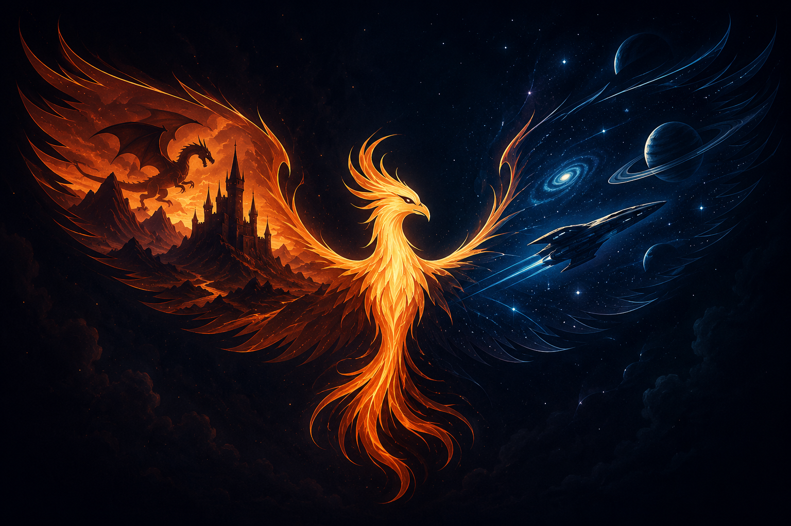
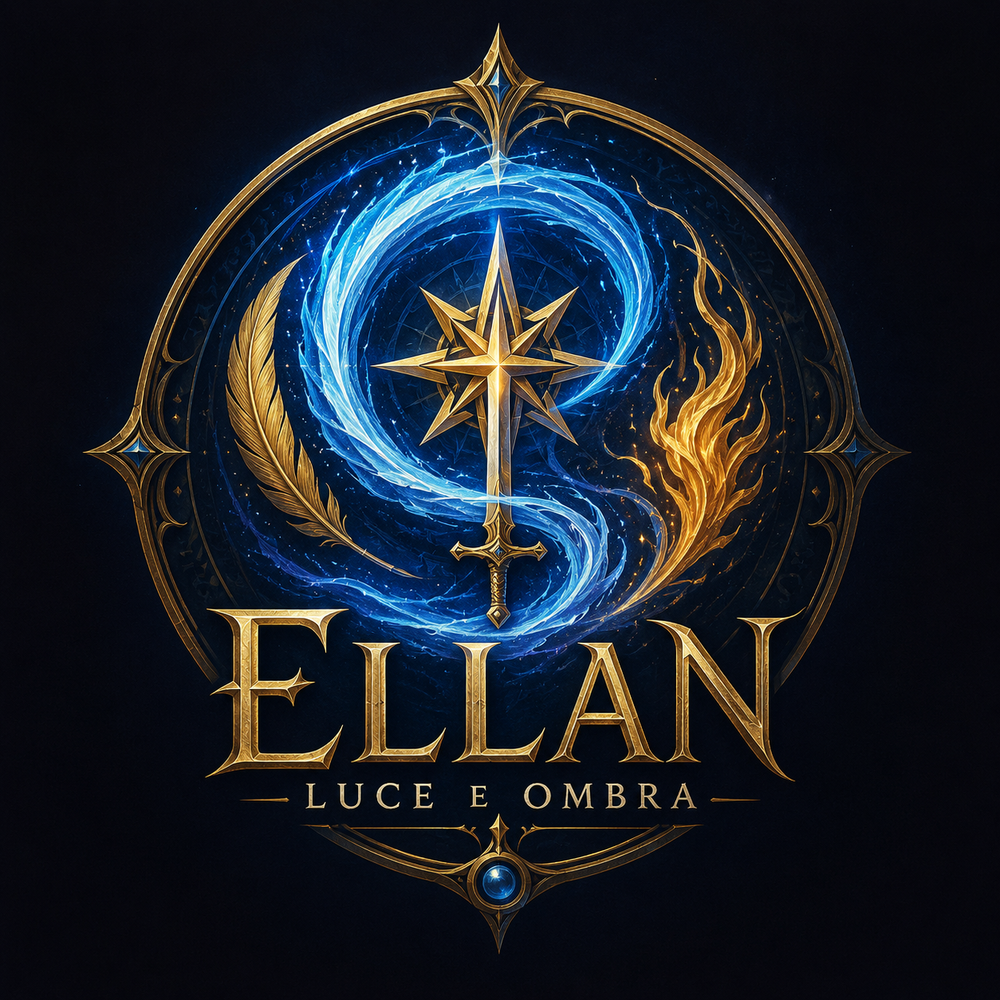
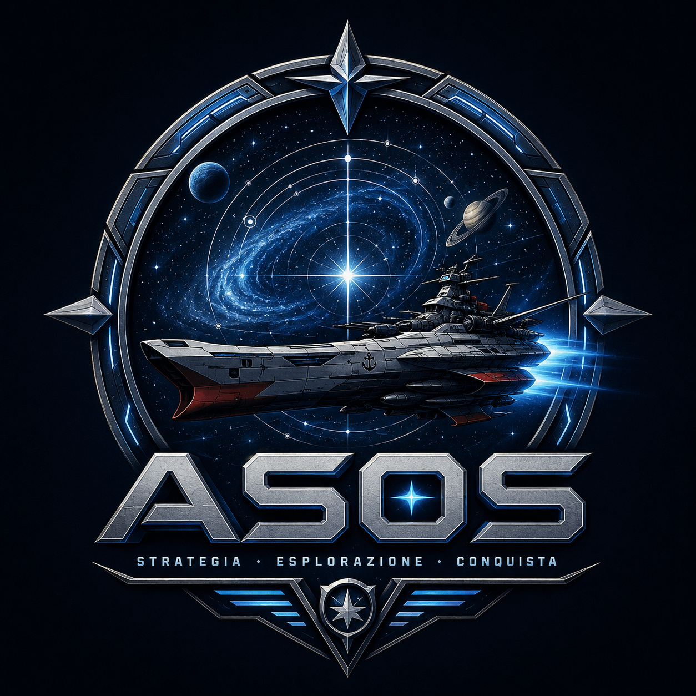
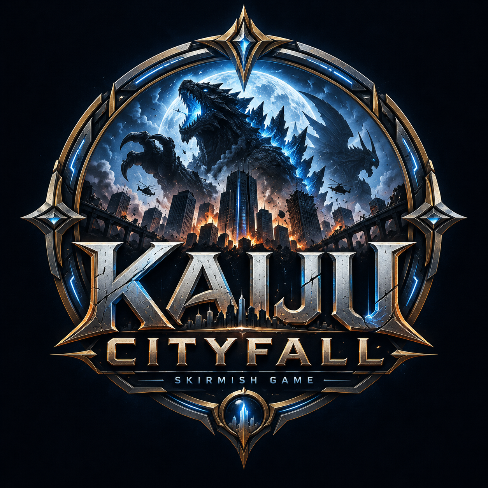
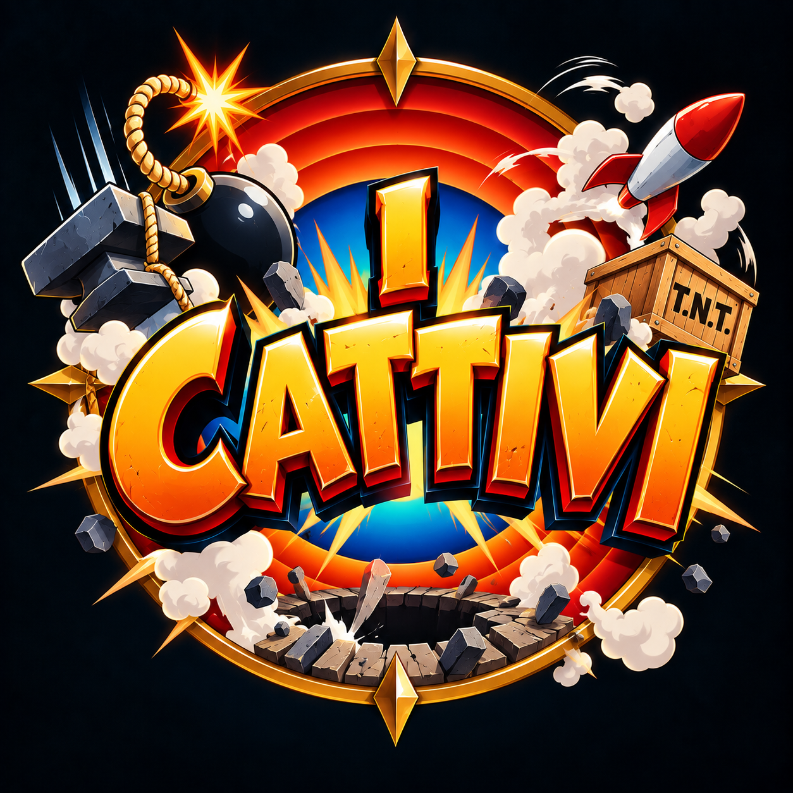
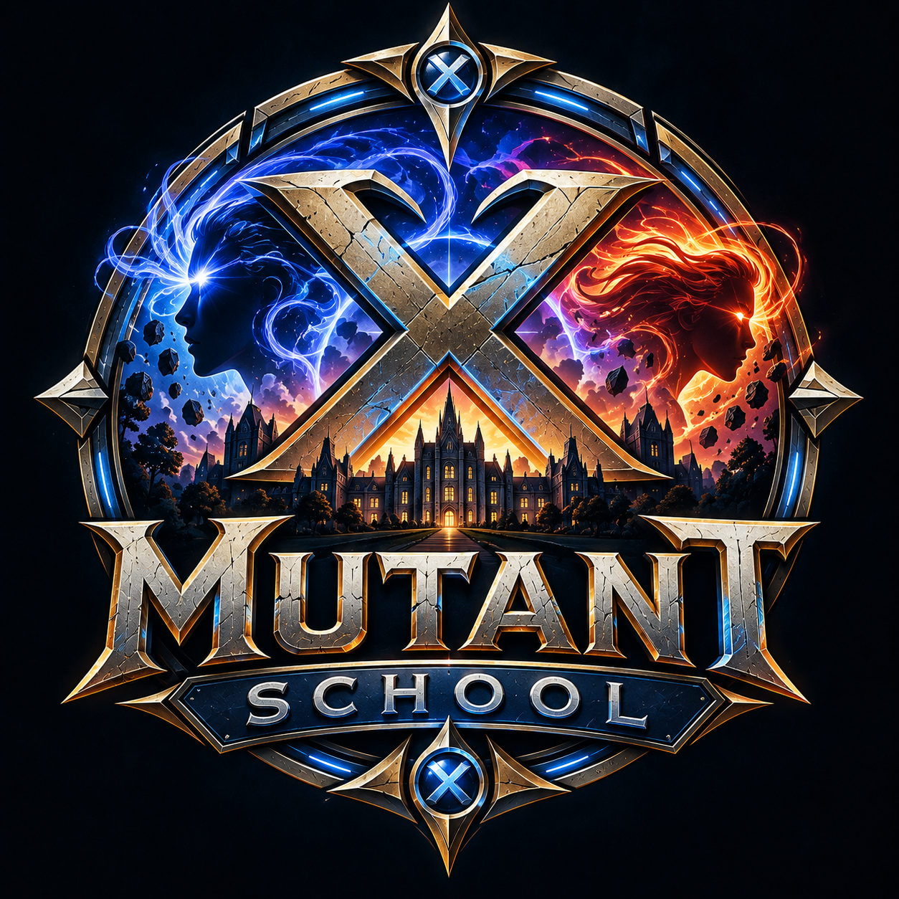

Giochi, ambientazioni e mondi originali.
Qui nascono Ellan – Luce e Ombra, ASOS e altri progetti ludici.

Ambientazione fantasy e gioco di carte tattico originale.

Strategia, esplorazione e conquista nello spazio.

Un gioco di miniature con battaglie tra mostri giganti e città da distruggere.
Nuovi giochi stanno prendendo forma nel laboratorio della Fenice.

Un nuovo progetto della Compagnia della Fenice attualmente in sviluppo. Sei il "cattivo" di una storia di cartoni animati, non importa quanto ci provi non riuscirai mai a battere il "buono", la cosa importante è però continuare a provarci nel modo più assurdo possibile!

Costruisci e gestisci una scuola per giovani mutanti, affrontando crisi, rivalità e minacce sempre più pericolose.
La Compagnia della Fenice nacque molti anni fa come nome non ufficiale del mio primo gruppo di gioco di ruolo, quando frequentavo ancora le scuole superiori.
Da allora i tavoli sono cambiati, alcune persone si sono allontanate e altre sono arrivate. Le loro avventure, le loro scelte e i loro personaggi hanno però lasciato un segno nei mondi che continuiamo a raccontare.
Oggi la Compagnia della Fenice non è una società, una redazione o un gruppo con un elenco formale di membri. È il nome che raccoglie idealmente tutti i tavoli, i giocatori e le storie che hanno contribuito alla nascita e alla crescita di questi progetti.
Io sono Andrea, autore e curatore del progetto, e oggi ne sono la voce. Ma mondi come Ellan non sono nati nel vuoto: sono cresciuti attraverso molti anni di gioco condiviso.
Scopri la storia e il manifesto della Compagnia · Conosci Andrea
Nuovi contenuti, materiali scaricabili e approfondimenti sono in preparazione.
Pillole, sigle, trailer, cronache e racconti dai mondi della Fenice.
Miniature, mappe, materiali da stampare e risorse per il tavolo.
Diari di sviluppo, ispirazioni, note d'autore e curiosità sui progetti.